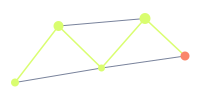

One satellite diameter clear on every side.
Independent research / Identity system 01
Find the
signal.
Follow it.
Orbit Signal connects observations across disciplines. Our identity makes complex ideas feel navigable: precise coordinates, unexpected connections, one clear signal.
RA 04h 32m / DEC +18° 12′
STATUS OBSERVINGMETHOD CURIOUS / PRECISE / OPENREFERENCE OS—001
01 / System principle
Connect.
Do not decorate.
The orbital signature pairs a stable core with a changing point of view. Give it at least one satellite diameter of clear space. Minimum 32 px. Never rotate the master or add extra satellites.
The constellation pattern is a relationship diagram. Crop it decisively; keep the line weights and signal points intact.
OBSERVATION NETWORK

05 / 01
MANY OBSERVATIONS. ONE CONNECTED IDEA.×
Keep the master’s fixed orientation.
02 / Spectrum
Dark field.
Bright intelligence.
Void is the default canvas. Signal highlights the conclusion. Flare marks a live point of interest, never a large background. Fog carries long-form text; avoid pure white glare.
Primary accent · signals and selected states. Void on Signal: 16.0:1.
Foundation · the reading canvas. Fog on Void: 13.7:1.
Secondary accent · one focal point. Void on Flare: 7.6:1.
03 / Type & language
Precision has
a human voice.
What changes
when we connect?
Name the observation before the interpretation. Be exact about uncertainty. Invite a better question. Short technical labels frame expansive, readable headlines.
The useful
unknown.
A question worth following.Different views.
Shared coordinates.
18:30 UTC / OPEN OBSERVATORY04 / Masters
Small system.
Long range.
Use the full orbital signature for introductions. Use constellation linework to connect supporting ideas. The monochrome archive remains available for historical reproduction.